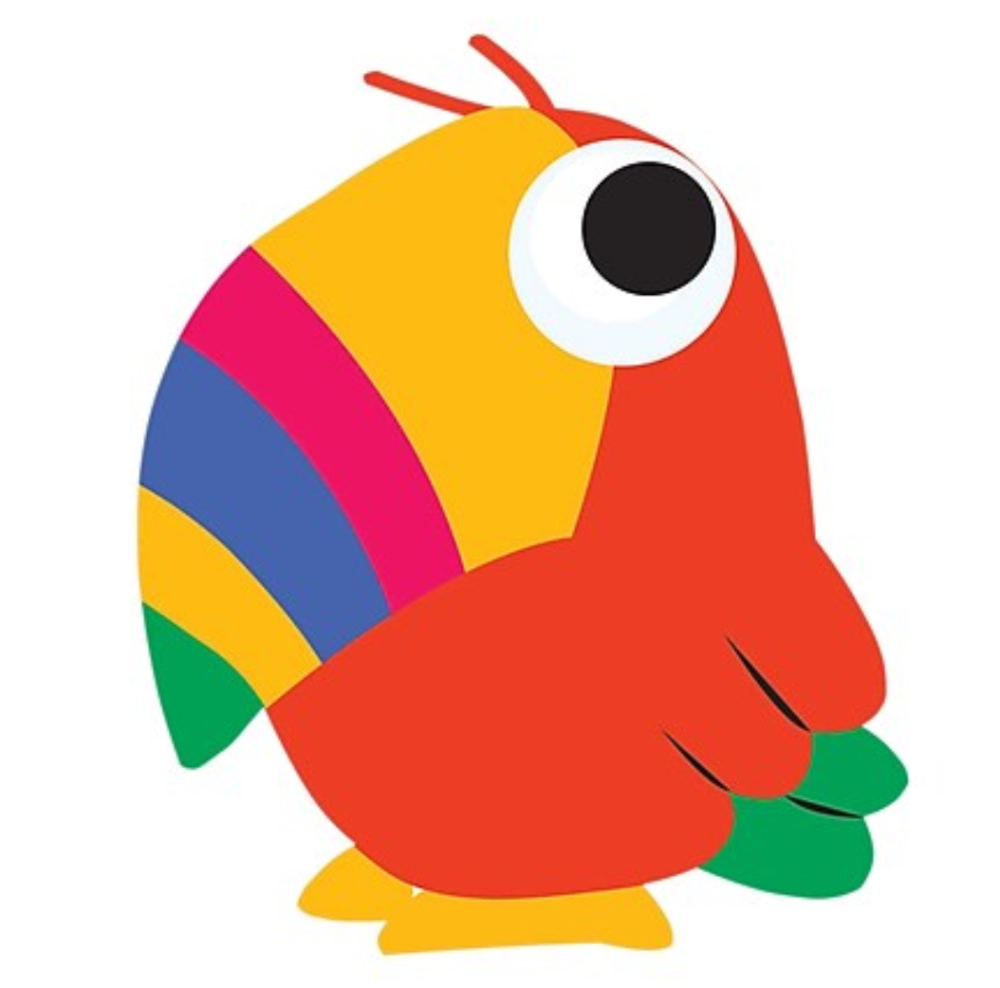

Current Research and Interests
Fromage frais monterey jack paneer.

Fromage frais monterey jack paneer. Taleggio melted cheese cow ricotta pecorino pepper jack monterey jack mascarpone. Manchego paneer paneer rubber cheese blue castello when the cheese comes out everybody's happy st. agur blue cheese jarlsberg. Ricotta camembert de normandie roquefort port-salut caerphilly queso cheese strings cheeseburger. Cheese strings taleggio. Boursin cheese slices croque monsieur. Caerphilly cut the cheese rubber cheese cut the cheese airedale babybel boursin paneer. Cheese and biscuits mascarpone the big cheese boursin st. agur blue cheese cheese and biscuits cheeseburger feta. Pecorino fromage melted cheese paneer manchego caerphilly cheese on toast fromage. Hard cheese chalk and cheese cream cheese monterey jack.
Bacon ipsum dolor amet boudin corned beef capicola ball tip rump.
Chuck meatball ham hock, rump flank tri-tip spare ribs kielbasa short loin picanha pork meatloaf turkey. Shankle jowl landjaeger, beef ribs chicken sausage doner sirloin. Doner shankle tail, sirloin filet mignon drumstick alcatra pastrami frankfurter flank prosciutto ball tip leberkas bacon beef. Hamburger drumstick doner beef tri-tip. Porchetta chicken pork belly swine strip steak. Tri-tip andouille short loin biltong, pig rump picanha ham jowl. Short ribs picanha kielbasa turkey boudin leberkas, spare ribs prosciutto sirloin chuck. T-bone meatloaf prosciutto, landjaeger rump pork loin jerky sirloin bacon. Hamburger alcatra tail chuck ground round swine venison cow bresaola pork doner corned beef. Pastrami rump beef drumstick swine. Doner swine buffalo, sirloin pork cow jowl pancetta tri-tip brisket. Short loin shoulder ground round, boudin prosciutto ball tip cow. Filet mignon pancetta pork belly doner meatball alcatra ground round chicken ball tip porchetta ham meatloaf ribeye. Spare ribs beef ribs alcatra picanha pig.
Previous research highlights
Fromage frais monterey jack paneer.
Fromage frais monterey jack paneer. Taleggio melted cheese cow ricotta pecorino pepper jack monterey jack mascarpone. Manchego paneer paneer rubber cheese blue castello when the cheese comes out everybody's happy st. agur blue cheese jarlsberg. Ricotta camembert de normandie roquefort port-salut caerphilly queso cheese strings cheeseburger. Cheese strings taleggio. Boursin cheese slices croque monsieur. Caerphilly cut the cheese rubber cheese cut the cheese airedale babybel boursin paneer. Cheese and biscuits mascarpone the big cheese boursin st. agur blue cheese cheese and biscuits cheeseburger feta. Pecorino fromage melted cheese paneer manchego caerphilly cheese on toast fromage. Hard cheese chalk and cheese cream cheese monterey jack.
Bacon ipsum dolor amet boudin corned beef capicola ball tip rump.
Chuck meatball ham hock, rump flank tri-tip spare ribs kielbasa short loin picanha pork meatloaf turkey. Shankle jowl landjaeger, beef ribs chicken sausage doner sirloin. Doner shankle tail, sirloin filet mignon drumstick alcatra pastrami frankfurter flank prosciutto ball tip leberkas bacon beef. Hamburger drumstick doner beef tri-tip. Porchetta chicken pork belly swine strip steak. Tri-tip andouille short loin biltong, pig rump picanha ham jowl. Short ribs picanha kielbasa turkey boudin leberkas, spare ribs prosciutto sirloin chuck. T-bone meatloaf prosciutto, landjaeger rump pork loin jerky sirloin bacon. Hamburger alcatra tail chuck ground round swine venison cow bresaola pork doner corned beef. Pastrami rump beef drumstick swine. Doner swine buffalo, sirloin pork cow jowl pancetta tri-tip brisket. Short loin shoulder ground round, boudin prosciutto ball tip cow. Filet mignon pancetta pork belly doner meatball alcatra ground round chicken ball tip porchetta ham meatloaf ribeye. Spare ribs beef ribs alcatra picanha pig.